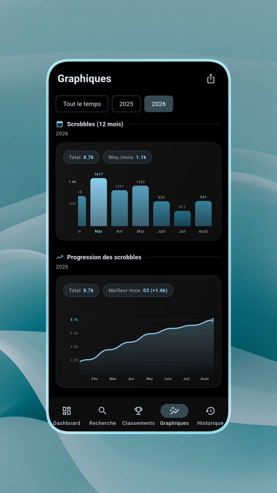
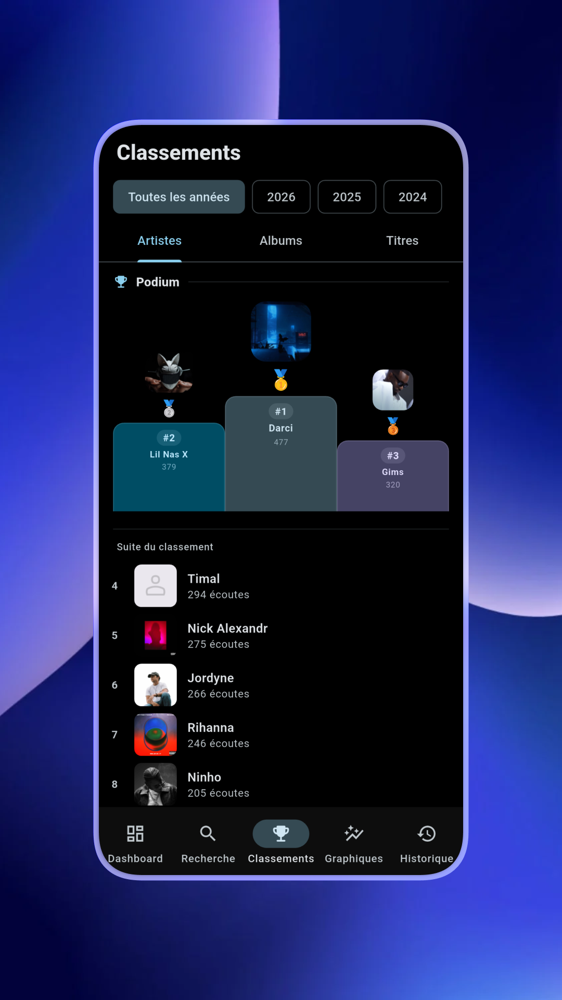
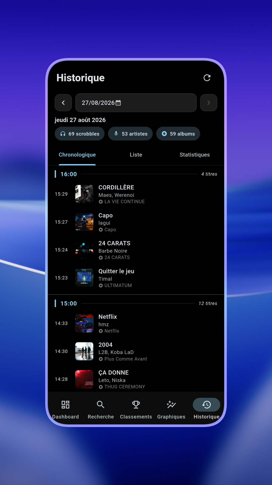
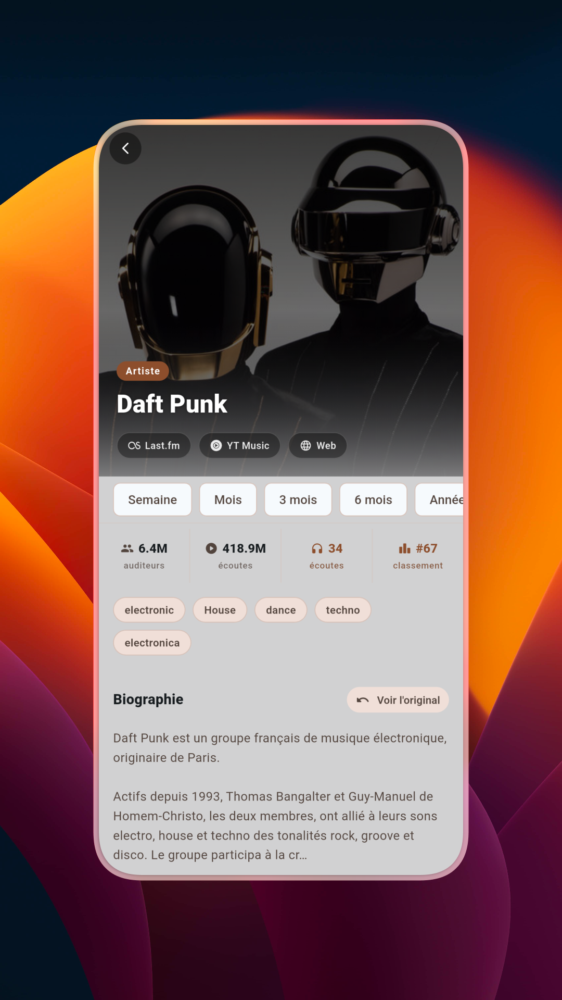
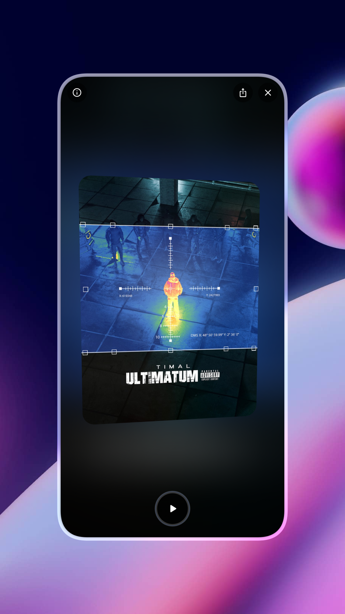

Connectez votre compte Last.fm, et LastStats prend le relais : vos artistes, vos albums, vos titres du moment, réunis dans un dashboard pensé pour être aussi beau qu'utile. Vos données restent les vôtres, tout simplement mises en valeur.
Côté design, l'app suit Material You à la lettre : les couleurs s'accordent à votre téléphone, vous choisissez entre clair, sombre ou AMOLED, et l'accent coloré de toute l'app s'adapte même à la pochette de l'album que vous écoutez.
L'app en détail

Un dashboard qui résume tout
Dès l'ouverture, l'essentiel est sous vos yeux : votre artiste et votre titre du moment, votre total de scrobbles, et votre dernier album écouté. Tout, sans jamais fouiller.

Tes stats en vrais graphiques
Vos scrobbles par mois, votre progression sur l'année, votre meilleur mois : des graphiques clairs et élégants, sur la période de votre choix, de 7 jours à toujours.

Classements par période
Le podium de vos artistes, albums et titres préférés, avec la liste complète juste en dessous. Un tap suffit pour changer de période.

Historique jour par jour
Toute votre écoute, classée jour par jour, avec l'heure exacte de chaque scrobble. Votre historique Last.fm complet, du premier jour à aujourd'hui.

Fiche artiste complète
Biographie, vos statistiques sur l'artiste, tags, morceaux similaires : chaque artiste que vous écoutez mérite sa propre page complète.

Vue album détaillée
Tracklist complète, durée totale, nombre d'écoutes par morceau : vous savez exactement où vous en êtes sur chaque album.

La pochette en carte 3D
Une touche de raffinement : la pochette se retourne en 3D d'un simple tap, comme une véritable carte, pour révéler ses informations au dos.

Débloque des achievements
Un système de niveaux fidèle à vos habitudes d'écoute, avec une collection d'achievements à débloquer au fil du temps.

Partagez vos statistiques
Une carte élégante avec vos statistiques du moment, prête à publier en story, dans les couleurs de votre thème.
Galerie
Cliquez sur une carte pour passer à la suivante.